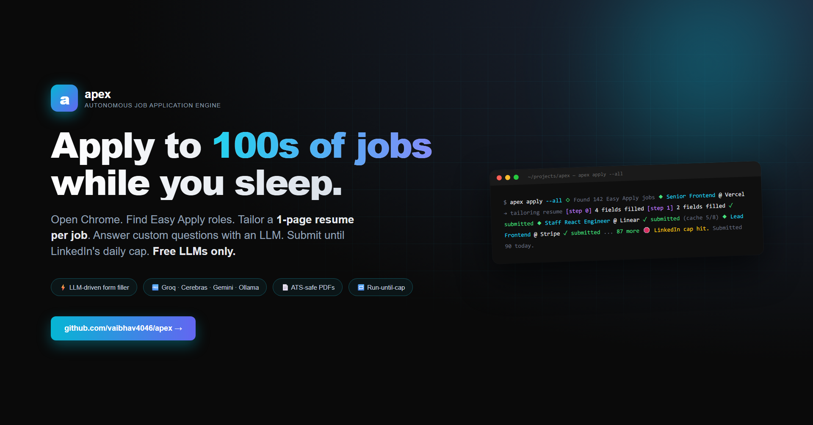
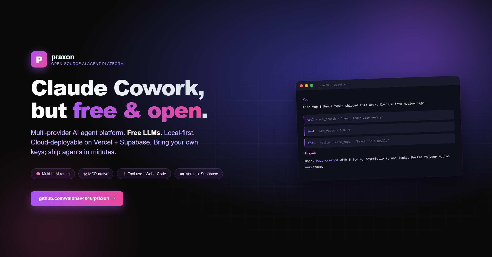
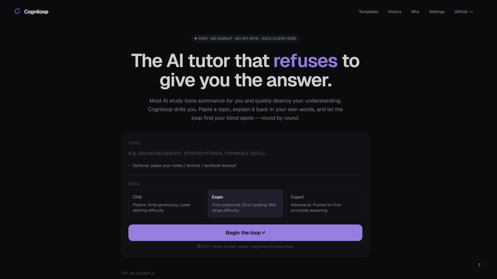
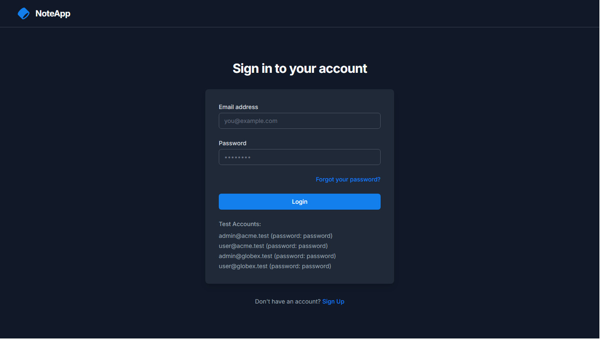
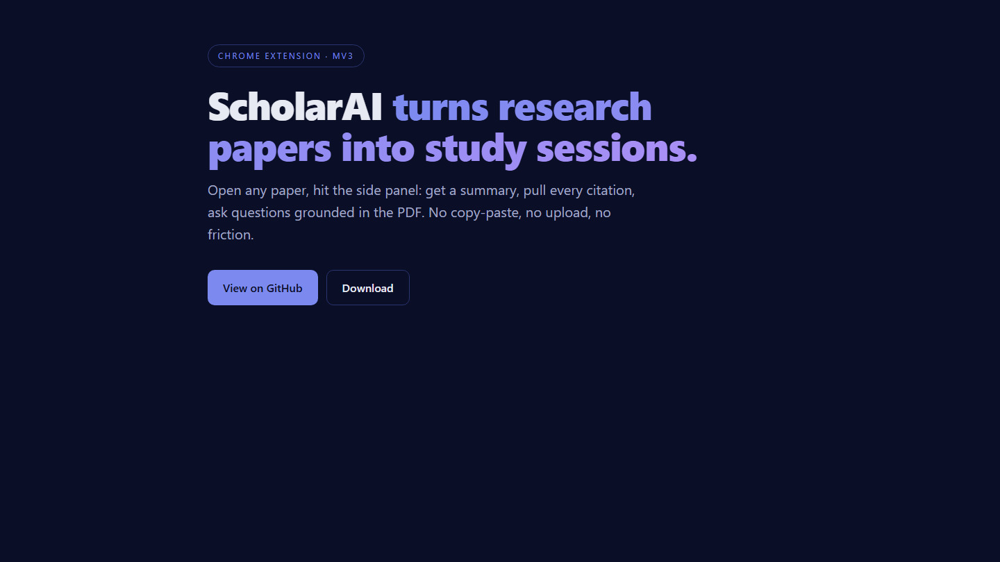
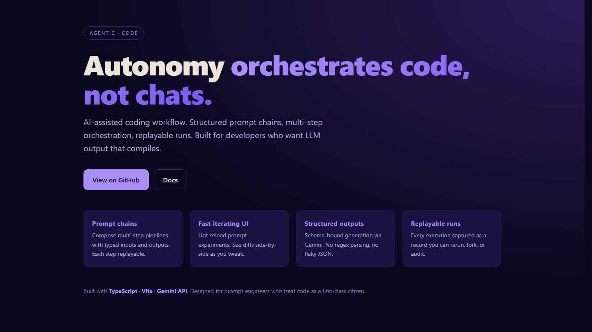
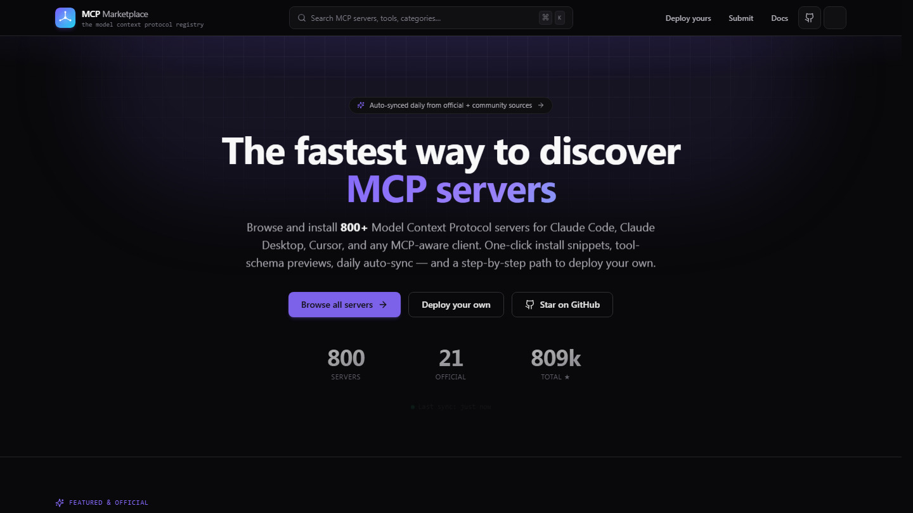
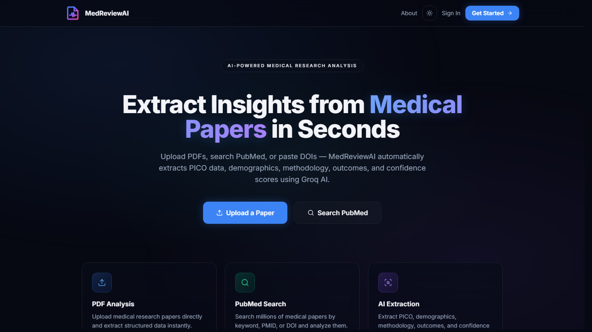
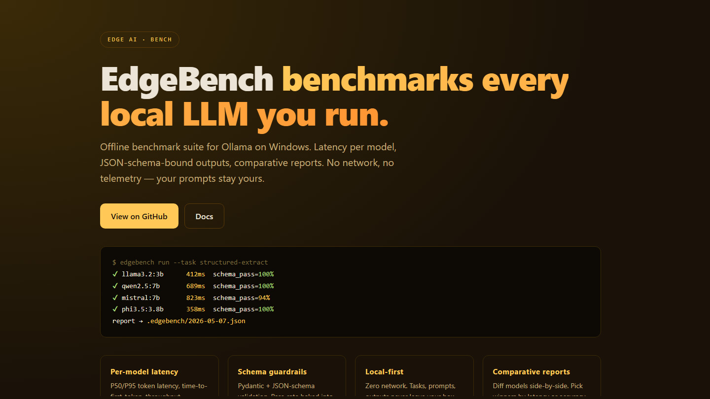

Specs first, code second.
Every feature gets a one-page brief — problem, success criteria, edge cases, rollback — before I touch the editor. Cuts rework by half. Makes async review trivial.
OPEN TO WORK · MIT-LICENSED PROJECTS · UK
Not a coding intern tethered to one stack. A full-stack AI engineer who designs the model layer, the retrieval layer, the front end that ships it, and the evaluation harness that proves it works — and gets sharper the more code is written.
About
Full-stack engineer with two years of applied experience pairing production React/TypeScript front-ends with Python AI services in real shipping products. I write code that other people maintain, document the workflows so non-engineers can run them, and use AI tooling daily as part of the work rather than as a side project.
Day-to-day I work in Next.js 15, React 19, TypeScript and Tailwind on the front; FastAPI, Node.js, Postgres + pgvector, Redis and BullMQ on the back; and OpenAI, Gemini, LangChain and MCP servers when the product needs intelligence. Auth with Supabase (Google OAuth, magic link, PKCE), shipping on Vercel and GCP Cloud Run.
I default to written specifications before code, runbooks alongside features, and reviews that move the codebase forward — easier to work in than I found it.
How I work
Every feature gets a one-page brief — problem, success criteria, edge cases, rollback — before I touch the editor. Cuts rework by half. Makes async review trivial.
Pull requests include the smoke test, the on-call doc, and the dashboard query. If a teammate can't operate it on day one without me, it's not done.
Claude Code daily for refactors and review. Cursor for greenfield. LangSmith for prompt iteration. I treat LLMs like a senior pair, not a crystal ball.
Experience
Selected work
A small, public set of systems I designed end-to-end — front end, backend, model layer, deployment. Each thumbnail links to the running version.

Open-source CLI that drives real Chrome via Playwright. Searches LinkedIn for Easy Apply roles, generates a tailored 1-page resume per job, fills custom application questions with an LLM (profile mapping → Q+A cache → free-LLM fallback), and submits autonomously until LinkedIn's daily cap or rate-limit signals trigger graceful stop. Free LLMs only — Groq, Cerebras, Gemini, Ollama. ATS-safe PDFs via Puppeteer. Pause-on-stuck UX hands off to the user when a required field can't be answered confidently.

A Claude Cowork alternative built end-to-end on Next.js 16, React 19 and TypeScript. Multi-LLM router across free providers (Groq, Cerebras, Gemini, Ollama) with auto-fallback. MCP-native tool layer. Local-first by default; cloud-deployable on Vercel + Supabase. 3-schema Postgres design with RLS for tenant isolation. Streaming agents on Vercel AI SDK; chat, code, deep research and automation in one workspace. Bring your own keys; ship agents in minutes.

Locked-prompt evaluator that grades free-form student answers against a rubric, returns a 0–3 score with a short explanation, and tracks concept mastery across sessions (weak → shaky → solid → mastered). Single-prompt design — no agent loop, no retrieval — keeps median latency under one second on Groq Llama 3.3 70B with a Pollinations fallback for cost. Edge runtime, strict-typed Next.js 16, KaTeX rendering for mathematical answers.

Notes platform with strict tenant isolation, role-based access, plan-tier limits and JWT-based auth. Built to practice the boring-but-load-bearing parts of B2B SaaS: row-level tenant scoping, audit-ready RBAC, plan-driven feature gating, and clean REST boundaries between the dashboard and the API.

Manifest V3 Chrome extension that uses Gemini's native PDF input to summarise papers, extract citations and answer grounded questions about the open document — all from a side panel, without copy-paste or upload. Engineering challenge was treating the browser PDF buffer as the model's primary input rather than scraping its rendered text, which preserves figure and citation context.

Prompt-chain orchestrator for AI-assisted coding. Each step is a typed transformation with a deterministic input/output contract, runs are recorded as replayable JSON transcripts, and the UI surfaces diffs side-by-side as you iterate. Designed to make LLM coding less of a black box — every generation is auditable, reproducible and forkable.

A searchable registry of Model Context Protocol servers — the emerging plug-in standard for agent toolchains. Pulls from Glama and the official MCP repository on a daily schedule, normalises tool schemas, and renders one-line install snippets for Claude Desktop, Cursor and Claude Code. Built on Next.js 15 RSC with MIT-licensed source.

RAG pipeline over PubMed, bioRxiv and medRxiv that extracts a PICO frame (Population, Intervention, Comparator, Outcome) from each paper, scores extraction confidence per field, and surfaces conflicting findings across sources. Useful for the literature-review step of any clinical question — and a good substrate for studying how retrieval quality compounds through a structured-output pipeline.

Offline benchmark for Ollama-served models. Measures P50 / P95 token latency, time-to-first-token and throughput across a fixed task set, validates outputs against Pydantic / JSON-schema contracts, and emits per-model reports you can diff. Built because evaluating local models against a real workload is harder than running them once and eyeballing the answer.
Research
Preprints and papers I've authored. Each links to the open-access PDF, ResearchGate record, and DOI record.
A system that closes the residual ~50 ms latency gap between cloud gaming and local wired console play by combining three mechanisms: a 3–8M-parameter distilled decoder-only transformer running on the controller (producing a semantically compressed input stream and a probabilistic short-horizon prediction of player intent), a direct 6 GHz Wi-Fi link with OFDMA priority scheduling that bypasses the host's USB/Bluetooth stack, and a cloud-side speculation engine that renders one round-trip ahead with a state-machine recovery protocol bounding the visual cost of mispredictions to one to two frames.
Skills
Education
University of Liverpool, United Kingdom · Jan 2026 – Jan 2027
Christ University, Bengaluru, India · 2022 – 2025 · CGPA 8.7 / 10
Contact
Liverpool, UK based. Open to part-time and contract roles. Replies within a working day.